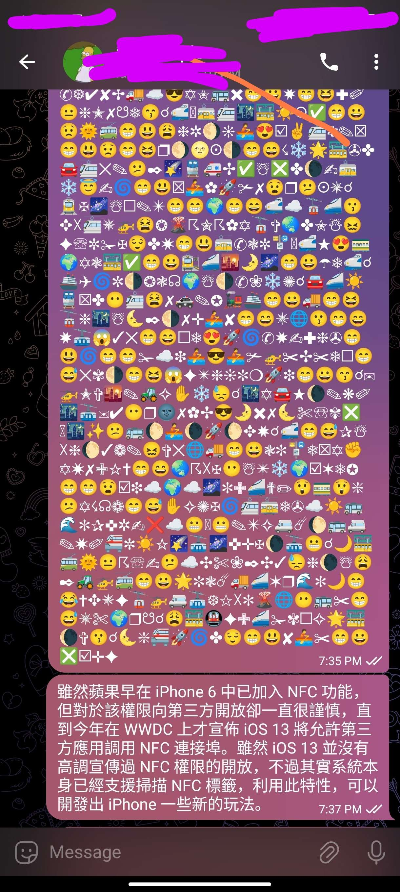
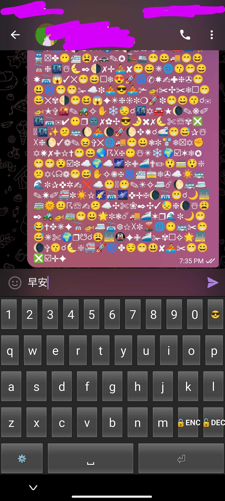
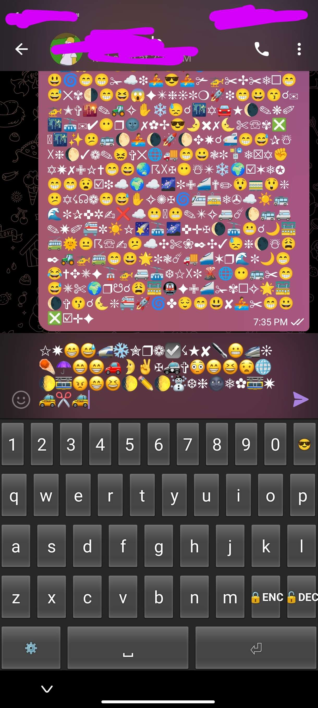
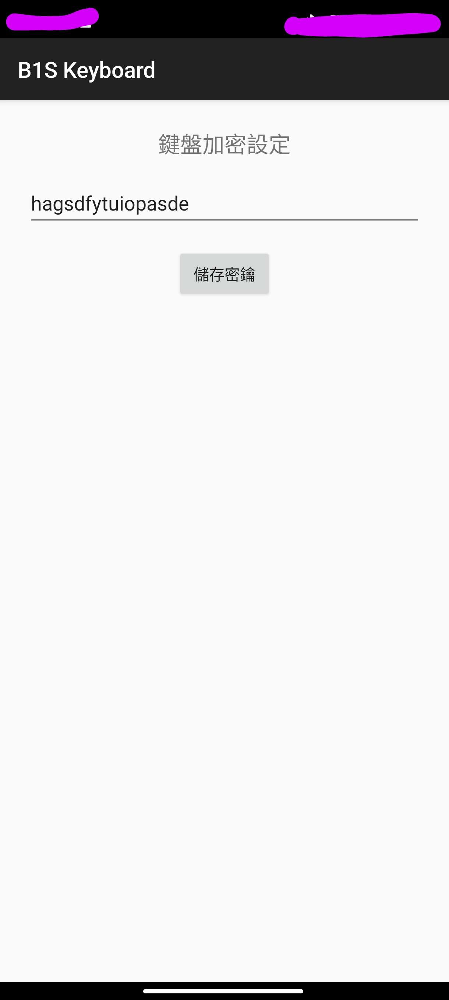

即時加密聊天鍵盤
嵌入系統層的匿名通訊防護網




產品介紹
這是一款專為注重隱私的使用者設計的匿名加密鍵盤。它直接嵌入操作系統輸入法層，為您的每一句對話提供無感且強大的安全屏障。
功能特色：
- 無感操作：直接整合於輸入法中，無須在多個通訊程式間頻繁切換。
- 非對稱及混淆加密：採用非傳統的衍生加密算法，大幅提升鏈上與流量分析的破解難度。
- 系統級相容：直接嵌入鍵盤，完美適用於各類主流即時通訊軟體。
- 零日誌零登入：無需註冊或登入，不收集任何輸入習慣，保障使用者數位身份絕對匿名。
- 強化密鑰防線：採用動態密鑰混淆，讓黑客破解難度隨字元長度呈線性上升。
當您需要在公共社交平台進行敏感對話、傳遞帳號密鑰或探討商業機密時，這款鍵盤會是您的最佳安全防禦武器。
iOS 應用程式
開發進度與規劃：
- iOS 作業系統沙盒環境較為封閉，為保障私鑰與輸入安全，我們正使用原生 Swift/Obj-C 軟體開發套件進行底層架構研究。
- 目前尚在開發研究中...
- 敬請期待下一個主要版本的發佈...